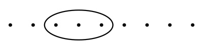
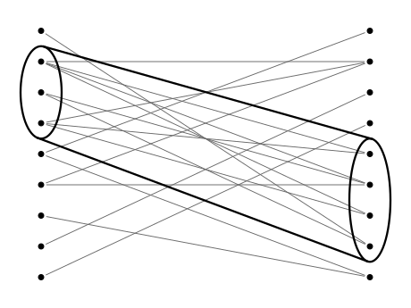

In a previous post, we showed how greedily appending to a simple categorical text model in the direction of maximal compression lead to meaningful chunking of the data.
To bring the model closer to one capable of learning a grammar, we complete the logic by incorporating the dual of chunking: categorization.
While chunking was formalized as “joint” symbols—consecutive symbols concatenated together—categories are formalized as sets of possible symbols called “unions”.
1 Union Semantics
Unlike chunking, introducing classes of symbols under a categorical model doesn’t immediately produce savings in code length.
1.1 Information of Joint Intro. (Recap)
Encoding a categorical model with counts \(n_0, n_1, ... n_{m-1}\) and instantiating it into a string of symbols takes information approximately equal to:
\[\underbrace{\log {N + m - 1 \choose m - 1} \vphantom{\prod_{\displaystyle i}}} _{\displaystyle n_0,n_1,\ldots,n_{m-1} \vphantom{\prod}} + \underbrace{\log {N \choose n_0,n_1,\ldots,n_{m-1}} \vphantom{\prod_{\displaystyle i}}} _{\displaystyle\mathrm{String} \vphantom{\prod}} ~~~\text{where } N = \sum_i n_i.\]
Introducing a new joint symbol means docking a joint count \(n_{01}\) from symbol counts \(n_0\) and \(n_1\) and appending count \(n_{01}\) resulting in an increase in the description length of the counts vector:
\[\begin{align} \Delta I^*_{\mathrm{\bf n}} &= \log {N + m - n_{01} \choose m} - \log {N + m - 1 \choose m - 1}\\[5pt] &= \log \left(\frac{(N + m - n_{01})!\,N!} {m\,(N + m - 1)!\,(N - n_{01})!}\right) \\[5pt] \end{align}\]
and a decrease in the length of string permutation:
\[\begin{align} \Delta I^*_\mathrm{\bf s} &= \log {N - n_{01} \choose n_0 - n_{01}, n_1 - n_{01},\ldots,n_{m-1}, n_{01}} - \log {N \choose n_0,n_1,\ldots,n_{m-1}}\\[5pt] &= \log \left( \frac{(N - n_{01})!\,n_0!}{N!\,n_{01}!} \right) + \begin{cases} \log \left(\frac{\displaystyle 1}{\displaystyle (n_0 - 2n_{01})!} \right) & \text{when } s_0 = s_1 \\ \log \left(\frac{\displaystyle n_1!} {\displaystyle (n_0 - n_{01})!\,(n_1 - n_{01})!} \right) & \text{when } s_0 \neq s_1 \end{cases} \end{align}\]
which, together, is negative (i.e. reduces total information) only if the joint count \(n_{01}\) is sufficently large compared to what would be expected by independence.
1.2 Information of Union Intro. (Naive)
Because of the way permutations (and their coefficients) compose, changing a categorical distribution by re-classifying symbols, then adding appropriate codes to disambiguate the produced union-symbols has an insignificant effect on the total code length.
Say we place \(\ell\) symbols under a union \(S_{0\ell} = \{s_0,s_1,...,s_{\ell-1}\}\) with a cummulative count \(n_{0\ell}\) where
\[n_{0\ell} = \sum_{i=0}^{\ell-1}n_i~~,\]
moving their counts to a secondary counts vector (as required to interpret the code of their permutation) produces a combined description length:
\[\begin{align} I^*_{\mathrm{\bf n}} &= \log {N - n_{0\ell} + m - \ell - 1 \choose m - \ell - 1} + \log {n_{0\ell} + \ell - 1 \choose \ell - 1}\\[5pt] &= \log \left( {N - n_{0\ell} + m - \ell - 1 \choose m - \ell - 1} {n_{0\ell} + \ell - 1 \choose \ell - 1} \right). \end{align}\]
Similarly, removing those counts from the encoding of the permutation and adding them to a disambiguating permutation separates the coefficient:
\[\begin{align} I^*_{\mathrm{\bf s}} &= \log {N - n_{0\ell}\choose n_\ell,n_{\ell+1},\ldots,n_{m-1}} + \log {n_{0\ell}\choose n_0,n_1,\ldots,n_{\ell-1}} \\[5pt] &= \log \left( {N - n_{0\ell}\choose n_\ell,n_{\ell+1},\ldots,n_{m-1}} {n_{0\ell}\choose n_0,n_1,\ldots,n_{\ell-1}} \right), \end{align}\]
which, by Vandermonde’s identity
\[{m+n \choose r}=\sum _{k=0}^{r}{m \choose k}{n \choose r-k},\]
are approximately equal to the initial code length, modulo an additional \(O(\log m)\) term which matches the length a code would take to specify which of the \(m-\ell\) symbols is a union.
The bottom line is that the counting of permutations remains constant under hierarchical decompositions of the set of symbols, indicating that categories get their meaning from something beyond themselves.
1.3 Joints of Unions
The way to make unions do work for us is to put them into joints.
The naive (ineffective) approach being of looking for a cluser of symbols according to some arbitraty attribute:

we instead look for clusters in pairs—a “joint-of-unions”—such that they have a relatively high number of joints between them.
As a graph, the set of joint occurences of symbols in a string form edges in a bipartite graph connecting left and right symbols. Then, we are looking for a subgraph with high connectivity.

Logically, this is a type of joint, specifically a product type containing the set of joints corresponding to the Cartesian product of the left and right union types:
\[\frac{s_0 \in A ~~~~ s_1 \in B}{(s_0,s_1) \in A \times B}.\]
Properly speaking, the unions still don’t do work themselves to reduce the size of codes—that is only done through the introduction of the joint, but unions will allow joint types to be defined between groups of symbols which, individually, would lack the numbers to justify the introduction of construction rule for all the joints that the type covers. This is another way (together with the sparsity of a dictionary) that we overcome the taditional limitations of the \(n\)-gram model regarding exponentially large datasets required to support words of increasing size.
2 Format Description
Starting from the format used in the joints-only logic as a sum of code lengths
\[\begin{align} I^*(m,{\bf n}) \leq~&~ \underbrace{2\log (m-256)\vphantom{\prod_{\displaystyle i}}} _{\displaystyle m \vphantom{\prod}} + \underbrace{2\log \left(\frac{(m-1)!}{255!}\right)\vphantom{\prod_{\displaystyle i}}} _{\displaystyle\mathrm{Rules} \vphantom{\prod}} + \underbrace{2\log N\vphantom{\prod_{\displaystyle i}}} _{\displaystyle N \vphantom{\prod}}\\[10pt] &+ \underbrace{\log {N + m - 1 \choose m - 1} \vphantom{\prod_{\displaystyle i}}} _{\displaystyle \mathrm{\bf n}: n_0,n_1,\ldots,n_{m-1} \vphantom{\prod}} + \underbrace{\log {N \choose n_0,n_1,\ldots,n_{m-1}} \vphantom{\prod_{\displaystyle i}}} _{\displaystyle\mathrm{{\bf s} : String} \vphantom{\prod}}, \end{align}\]
the \(\mathrm{Rules}\) term is replaced with one defining the joint \(\mathrm{Types}\) and a new term that counts the information required to resolve each type back into joints.
2.1 Types
For introducing individual joints (one left symbol, one right symbol), two indexes with information \(\log(m)\) were sufficient to specify a construction rule, where \(m\) is the number of symbols before the introduction.
Cummulatively for a dictionary of \(m\) symbols, that came out to
\[I^*_{\bf r}(m) = 2\log\left(\frac{(m-1)!}{255!}\right)\]
assuming we start with 256 atomic symbols (stream of bytes).
To encode a joint type inductively, each symbol defined so far needs to be potentially included or excluded, twice (once for each side), pushing the information per introduction from \(2\log(m)\) to \(2m\). Still assuming 256 atomic symbols, we get a total
\[\begin{align} I_{\bf t}(m) &= 2 \cdot 256 + 2 \cdot 257 + \ldots + 2 \cdot (m - 1) \\[5pt] &= 2 \left( \sum_{i=1}^{m-1}i - \sum_{i=1}^{255}i \right) \\[5pt] &= 2 \left( \frac{(m-1)m}{2} - \frac{255 \cdot 256}{2} \right) \\[5pt] &= (m-1)m - 255 \cdot 256\\[5pt] &= \underbrace{m^2 - m - 65280 \vphantom{\prod}} _{\displaystyle\mathrm{Types} \vphantom{\prod}} \end{align}\]
2.2 Resolution
Given the final string of symbols, the definition of composite symbols is no longer sufficient to expand them back into a string of atoms.
For each symbol \(t_i\), its variety is
\[v_i = V(t_i) = \begin{cases} 1 & \text{when }t_i\text{ atomic} \\ |A| \cdot |B| & \text{when }t_i\text{ joint type } A \times B \end{cases} \]
which, for joint types, is the number of joints under the type, i.e. the product of the sizes of its unions.
For each composite symbol \(t_i\), a code of length \[\log v_i\] is required to disambiguate each of the joints it is to instantiate into. The number of instantiation is \(n_i\) at the moment of introduction, but as subsequent introductions create chunks out of this symbol, \(n_i\) goes down while the number of joints to disambiguates remain constant, as their disambiguation has to cascade through all parent definitions. We call this initial count \(k_i\).
The sum of the lengths of all those codes is therefore:
\[I_{\bf r}({\bf k}, {\bf v}) = \underbrace{\sum_i k_i \log v_i} _{\displaystyle \mathrm{Resolution} \vphantom{\prod}}\]
and the vector of counts \(\bf\) can be reconstructed at decode-time given the vector of counts \(\bf n\) and the definition of the types \(\bf t\).
Together, we have the total length of the encoding:
\[\begin{align} I(m,{\bf n},{\bf k},{\bf v}) \leq~&~ \underbrace{2\log (m-256)\vphantom{\prod_{\displaystyle i}}} _{\displaystyle m \vphantom{\prod}} + \underbrace{m^2 - m - 65280\vphantom{\prod_{\displaystyle i}}} _{\displaystyle\mathrm{{\bf t} : Types} \vphantom{\prod}} + \underbrace{2\log N\vphantom{\prod_{\displaystyle i}}} _{\displaystyle N \vphantom{\prod}}\\[10pt] &+ \underbrace{\log {N + m - 1 \choose m - 1} \vphantom{\prod_{\displaystyle i}}} _{\displaystyle \mathrm{\bf n}: n_0,n_1,\ldots,n_{m-1} \vphantom{\prod}} + \underbrace{\log {N \choose n_0,n_1,\ldots,n_{m-1}} \vphantom{\prod_{\displaystyle i}}} _{\displaystyle\mathrm{{\bf s} : String} \vphantom{\prod}}\\[10pt] &+ \underbrace{\sum_i^{m-1} k_i \log v_i \vphantom{\prod_{\displaystyle i}}} _{\displaystyle \mathrm{{\bf r} : Resolution} \vphantom{\prod}} \end{align}\]
which by reducing in value through strategic type introduction will result in compression.
3 Loss Function
To guide search, we formulate the difference in information produced by a single joint type introduction.
First, we ignore the length of the encodings of \(m\) and the type definitions which are constant regardless of which joint type is introduced. Changes in the length of \(N\) are minimal and occur deterministically at intervals of powers of two regardless of the chosen type structure so we also ignore it.
We generalize the difference in length of \(\bf n\) and \(\bf s\) from the introduction of a joint \((t_0,t_1) \mapsto t_m\) from:
\[\begin{align} \Delta I^*_{(\mathrm{\bf n},\mathrm{\bf s})} &= \log \left(\frac {(N + m - n_m)!} {m\,(N + m - 1)!\,n_m!} \right)\\ &~~~~~ + \begin{cases} \log \left(\frac{\displaystyle n_0!}{\displaystyle (n_0 - 2n_m)!} \right) & \text{when } t_0 = t_1 \\ \log \left(\frac{\displaystyle n_0!\,n_1!} {\displaystyle (n_0 - n_m)!\,(n_1 - n_m)!} \right) & \text{when } t_0 \neq t_1 \end{cases} \end{align}\]
to the introduction
\[\forall (a,b)\!:\! A\!\times\! B. (a,b) \mapsto t_m\]
of a joint type \(t_m\):
\[\Delta I_{(\mathrm{\bf n},\mathrm{\bf s})} = \log \left(\frac {(N + m - n_m)!} {m\,(N + m - 1)!\,n_m!} \right) + \sum_i^{m-1} \log\left(\frac{n_i!}{n_i'!}\right)\]
where \(n_i'\) is the updated entry in the counts vector \(\bf n\) after the type introduction, i.e. with however many times symbol \(t_i\) appears as either \(a\) or \(b\) (as \(A\) and \(B\) may intersect) subtracted from its previous count \(n_i\).
To this we add the difference in length of resolutions, which is only the addition of resolutions for \(t_m\):
\[\begin{align}\Delta I_{\bf r} &= \sum_i^m k_i \log v_i - \sum_i^{m-1} k_i \log v_i\\ &= k_m \log v_m \end{align}\]
which, at the time of introduction, is the same as
\[n_m \log v_m\]
All together, we get:
\[\begin{align} \Delta I_{(\mathrm{\bf n},\mathrm{\bf s},\mathrm{\bf r})} &= \log \left(\frac {(N + m - n_m)!} {m\,(N + m - 1)!\,n_m!} \right) + \sum_i^{m-1} \log\left(\frac{n_i!}{n_i'!}\right) + n_m \log v_m. \end{align}\]
4 Strategy
Of course, enumerating all subsets of a set of size, say, above 50, is computationally infeasible and in general exponential in the size of the set, which means we don’t have a way to find the type that will reduce our code length the most.
We therefore rely on classical optimization methods like hill climbing or EM, with a fixed number of random initializations to navigate the space of types more efficiently.
To do so, we need to (1) generate random types and (2) mutate those types until local maxima are reached. We explore instantiations of these two operations and their effects on search.
4.1 Random Initialization
4.1.1 The Problem
Although the concatenation of possible symbols for a right and left union form a simple 0/1-basis for the space of possible types, e.g.
---------- A ----------
| |
{s0, s1, s2, s3, s4, ...} × {s0, s1, s2, s3, s4, ...}
0 0 0 0 1 ... 1 1 0 0 1 ...
| |
---------- B ----------Randomly sampling this space and then counting covered joints by:
\[\frac{s_i \in A ~~~~ s_j \in B}{(s_i,s_j) \in A \times B}\]
won’t produce types that are “tight” with respect to their joints, meaning that some symbols included in either union types could have no joint with any of the symbols of the opposite union (unconnected vertex in the bipartite graph), meaning the introduction could immediately be improved by dropping this, and any such symbols, thereby reducing the length of the resolution.
Normalizing the randomly generated type by dropping those symbols as an additional step in the generation or—similarly—enforcing “tightness” by including random neighbors for every dangling vertex, will produce a biased generation either towards or away from symbols with few associated joints.
For a real uniform sampling of the space, we could re-sample every time “tightness” is violated, but this is not reliable. We try this method on our dataset of choice: a 2006 snapshot of the English Wikipedia (XML format) truncated at different magnitudes from the start:
Filename Size (N) Size (bytes)
enwik1 10^1 10 B
enwik2 10^2 100 B
enwik3 10^3 1 KB
enwik4 10^4 10 KB
enwik5 10^5 100 KB
... ... ...For each, we collect all joint occurences of pairs of symbols in the
string, form left and right unions, randomly select symbols with a 0.5
probability in each union and check the “tightness” property.
The unlikelihood of generating “tightness” by accident is immediately noticeable on a large enough dataset:
Filename P_tight (%)
enwik1 1.56208 %
enwik2 0.00157 %
enwik3 0.06044 %
enwik4 0.54991 %
enwik5 0.00000 %At some point, for a sufficiently diverse dataset, there are enough symbols which form isolated joints (two symbols that only appear in one joint together) that a random assignment either selects both or neither in every case is exponentially close to 0.
4.1.2 Formalizing Tightness
We call a bipartite graph “tight” if it contains no isolated vertex, i.e. no vertex without an edge connecting it to an opposing vertex.
Since the left and right unions of all joints in a string contain only symbols that have at least one joint with another symbol in the string, the top joint type is “tight”.
The number of subgraphs in a “tight” graph that are also “tight” is the number of ways, for each subset of one of the unions, to select at least one vertex neighboring each vertex in that subset. In other words, given a subset of either the left or right union, the number of possible accompanying subsets on the opposite side is the number of ways to select at least one vertex for each set of neighbors of vertices in the given subset.
I.e. this is the problem of counting hitting sets, (which is equivalent to set cover) for each subset of one of the unions, which is intractable for large enough graphs. This means that sampling types by unranking uniformly sampled integers is equally intractable.
The best option we have is to enforce the invariant progressively through a sufficeintly randomized selection that no bias becomes visible.
By randomly selecting a side, a symbol in that side and a selection for that symbol (included/excluded), then propagating the choice by eliminating possible symbols that would be made dangling if later selected or introducing a random symbol among its neighbors if none are so far selected, we achieve 100% “tight” type generation with no immediately visible bias.